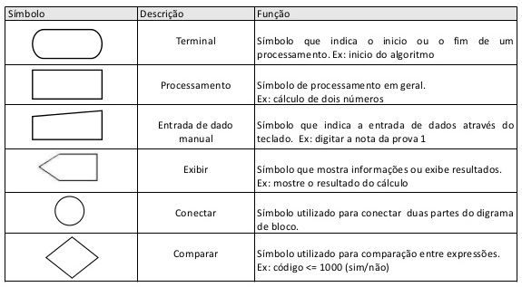

A lógica é uma área da Filosofia que se dedica a refletir sobre as diferentes formas de raciocinar. Quando usamos o raciocínio para tomar uma decisão, buscamos sempre a saída mais lógica, ou seja, a opção que nos pareça mais adeqauda para resolver um problema ou atingir um objetivo. A lógica define o encadeamento de ações mais coerentes para chegar a um objetivo. Ela define o uso da razaão para entender, calcular, processar, pesquisar, questionar e decidir sobre as coisas do mundo.
O computador é uma invenção lógica que funciona a partir de uma sequencia de instruções ou comandos. Para que seja eficiente, ele precisa ser programado logicamente, isto é, codificado por meio de elementos e atributos de programação.
Na prática, as sequências lógicas trazem:
Em informática, instrução é uma ordem ou um comando que indica ao computador uma ação elementar a ser executada. O computador é uma máquina que realiza exclusivamente o que foi programado para fazer. Ou seja, um programa nada mais é do que uma sequência lógica de instruções organizadas para manipular informações inseridas pelos usuários. Tudo isso é feito para atingir determinado fim.
Dentro da lógica de programação, um termo muito utilizado é "algoritmo". Mas você sabe o que ele significa?
O algoritmo não é a solução do problema, mas a descrição detalhadas das etapas que devem ser percorrridas para se chegar a uma solução. O algoritmo tem começo, meio fim e um objetivo a ser alcançado.
Segundo a definição do dicionário, algoritmo é o conjunto de regras e procedimentos lógicos perfeitamente definidos, que levam à solução de um problema por meio de um número finitos de etapas.
Vamos agora conferir quais são as etapas necessárias para o desenvovimento de um programa (sotware):
Existe três formas principais de se construir um algoritmo. São elas:
uma ordem isolada não permite a realização de um processo completo. Para isso é necessário um conjunto de instruções colocadas em uma sequência lógica.
Programas computacionais são algoritmos que foram codificados em uma determinada linguagem de programação. Existem programas específicos, denominados Aplicativos, que buscam resolver um problema específico a partir de dados informados pelo usuário.
Os programas só resolver situações previamente pensadas. Nesse sentido, programar é prever situações e tomar decisões sobre como alcançar os resultados esperados. Os softwares considerados funcionais e estáveis são aqueles sujos programadores se dedicaram muito em buscar uma sequência lógica perfeita
Vamos conferir as principais regras para o desenvolimento de algoritmos:
Ao desenvolver um algoritmo, devemos submete-lo a rotina elaborao a um processo de verificação, chamado de teste de mesa.
Agora vamos explicar melhor cada tipo de algoritmo que mencionamos anteriormente:
A técnica da descrição narrativa pode ser considerada a mais fácil de ser utilizada, pois é a mais prómima da linguagem que usamos no dia a dia para nos comunicarmos.
A descrição narrativa é muito usada em documentos como manuais de equipamentos, receitas culinárias, bula de remédio, descrições do tipo "faça você mesmo", etc
O diagrama de blocos é uma forma padronizada e eficaz de representarmos os passos lógicos de um processamento. Nos diagramas de bloco cada ação, instrução ou processamento deve ser descrito dentro de um símbolo geométrico de modo resumido. Setas e palavras são usados para indicar o caminho a ser percorrido, ou seja, o fluxo do processamento.
Confira a seguir os principais símbolos utilizados na construção de fluxogramas
O pseudocódigo usa termos da língua portuguesa encadeados e organizados de forma parecida com as diferentes linguagens de programação.
A opção pelo pseudocódigo na etapa de estruturação do algoritmo proporciona um ganho de tempo na etapa de desenvolvimento do código. É uma forma bastante detalhada de escrever sequências lógica de instrução e processamento.
Confira abaixo as regras para a padronização do pseudocódigo:
Programar computadores requer a definição e o uso de espaços em memória para receber informações inseridas pelos usuários. Os espaços em memória recebem informações que podem variar no decorrer de um processamento. E ai entra outro elemento importante na lógica de programação: as variáveis
Em linhas gerais, variáveis são espaços em memória que servem para guardar um tipo de dado ou informação. Esses espaços em memória devem receber nomes específicos e únicos, para que possam ser referenciados exclusivamente e usados sempres que necessário.
Uma variável representa um endereço da memória RAM que armazena, temporariamente, valores e informações. Esses endereços recebem um nome e um conteúdo. Cada vez que mencionarmos o nome da variável, seu conteúdo é manipulado
Apesar das linguagens de programação atuais serem mais flexíveis quanto a posição de declaração das variáveis, por uma questão de organização e padronização, é indicado que as variáveis sejam declaradas sempre no início dos algoritmos e dos programas.
Chamamos de constante todo valor fico que não será alterado durante a execussão de um programa.
Por exemplo, na expressão IMC = peso / altura2
o "2" é uma constante.
Outro exemplo é o número Π
Outros elementos fundamentais na programação são os operadores lógicos. Eles também são conhecidos como dados booleanos, por referência a George Booel, matemático que deu nome à algebra booleana, expressão que trata desses tipos de dados.